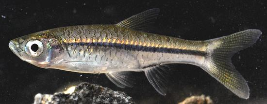
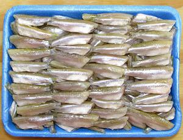

Silver Rasbora

[River Baby (Asian market); Cá Lòng Tong (Viet);
Rasbora argyrotaenia]
Found in the rivers of Southeast Asia, including Borneo and Indonesia,
these are very tiny carp, growing to 4.7 inches long, but are commonly
shorter. While primarily river fish, they will invade flooded rice
fields. They are most known as an aquarium fish, but are also eaten,
especially in Vietnam, where the fish is highly regarded.
More on the Carp Family.

This fish is highly regarded in Vietnam. It is usually prepared with the
head and tail removed, briefly stewed with aromatic herbs and chilis.
Buying:
The tray of frozen prepared Cá Lòng
Tong in the photograph was purchased from a large Chinese / Vietnamese
market in Los Angeles (San Gabriel) for 2019 US $3.29 for 14 ounces
($3.76 / pound). The prepared fish were typically 2-1/8 inches long.
sf_silrasz 190211 - www.clovegarden.com
©Andrew Grygus - agryg@clovegarden.com - Photos
on this page not otherwise credited © cg1
- Linking to and non-commercial use of this page permitted